Listen sind in Mathematica wichtige Instrumente für die Manipulation ganzer Gruppen von Größen, die vor allem in der höherdimensionalen Algebra und Analysis von großem Wert sind. Da auch allgemein Ausdrücke vielfach Ähnlichkeiten mit Listen besitzen, wird der Umgang mit Listen zu einem Musterbeispiel für Manipulationen auf bestimmten Klassen von Ausdrücken.
Unter einer Liste versteht man die Zusammenfassung mehrerer Objekte zu einem neuen Objekt, der Liste, wobei in der Liste zunächst alle Objekte gleichwertig sind und sich nur durch ihren Standort in der Liste voneinander unterscheiden. Die Aufstellung einer Liste erfolgt mit der Angabe
Zur Erläuterung der Arbeit mit Listen wird eine konkrete Liste benutzt, die mit l1 bezeichnet wird:
| 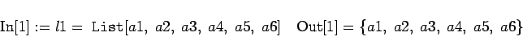 | (20.12) |
Mathematica benutzt bei der Wiedergabe der Liste die Kurzform: Einschluß in geschweifte Klammern.
In der folgenden Tabelle sind Befehle dargestellt, die auf Elemente bzw. mehrere Elemente zugreifen und dann eine ,,Unterliste`` ausgeben.
| 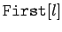 | wählt das erste Element aus |
| 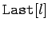 | wählt das letzte Element aus |
| 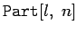 oder l[[n]] | wählt das n-te Element aus |
| 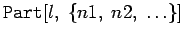 | erstellt eine Liste aus den Elementen mit den angegebenen Nummern |
| 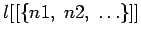 | äquivalent zur vorherigen Operation |
| 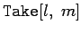 | ergibt die Liste der ersten m Elemente von l |
| 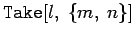 | ergibt die Liste der Elemente von m bis n |
| 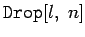 | ergibt die Liste ohne die ersten n Elemente |
| 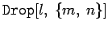 | ergibt die Liste ohne Elemente von m bis n |
| Beispiel |
|
Für die Liste l1 in (20.11) gilt z.B. 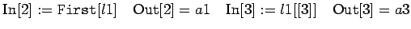 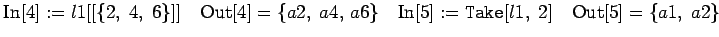 |